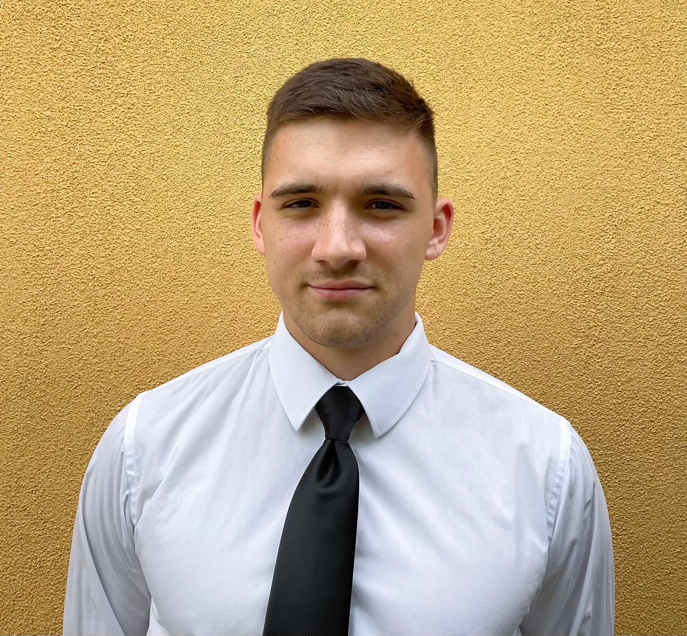

Participants
Kiss Ádám
Mérnök

Antal Levente
RF fejlesztő

Südi Tamás
Szoftverfejlesztő


Már 2022 tavaszán órarendi keretekben hallgathatták a résztvevők az űrkutatáshoz is szükséges elektronikai alapismereteket. Ekkor egy Attiny13A mikrovezérlővel készíthettek LED villogót, amin gombbal lehetett változtatni a lejátszott animációt

2022 májusában a kollégium érdeklődő lakói üzemlátogatást tettek a Csiha Zrt.-nél, ahol megismerhették milyen az elektronikai ipar mindennapja Szeged belvárosában.


2022 nyarán az SZTE Móra Ferenc Szakkollégium lelkes diákjai a Nemzetközi Űrállomásról töltöttek le képeslapokat SSTV képek formájában. Ehhez két módszert is használtak: egy kézirádiót, illetve egy megfelelő telefonos dekódoló programot, valamint ezzel párhuzamosan egy szoftverrádiós vevőt is.


2022 nyarának végén az SZTE Móra Ferenc Szakkollégium igazgatójának engedélyével telepítettük az első állandó (azóta már üzemen kívüli) vevőállomásunkat, amivel NOAA műholdak jeleit vételeztük. Az állomás egy házi készítésű iker-keresztdipól antennával működött, LC előszűrővel, valamint PGA-103 előerősítővel. A végső feldolgozást egy RTL-SDR szoftverrádió végezte.
2022 őszén lehtőségünk adódott egy apró áramkört elhelyezni a BME MRC-100 műholdjának fedélzetén. Az áramkörön elhelyezett mérések egy analóg-digitális átalakító zaját méri az űrben, valamint a műholdon elhelyezett UART busz jitterét. A fejlesztést három hét alatt vitték végbe az SZTE Móra Ferenc Szakkollégium hallgatói.